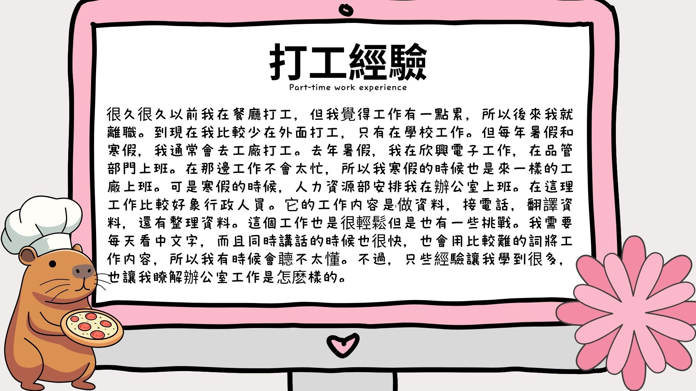

很久以前，我在餐廳打工，但我覺得那份工作有點累，所以後來就離職了。到現在，我比較少在外面打工，只有在學校工作。不過，每年暑假和寒假，我通常會去工廠打工。去年暑假，我在欣興電子工作，在品管部門上班。在那邊工作不會太累，所以寒假的時候也回到同一間工廠工作。不過寒假時，人力資源部安排我在辦公室上班。在那理的工作比較像行政人員。它的工作内容包括處理資料，接電話，翻譯文件，以及整理資料。這份工作雖然很輕鬆，但也有一些挑戰。我需要每天看很多中文字，而且同時講話的速度很快，也會用比較難的詞來説明工作内容，所以我有時候會聼不太懂。不過，這些經驗讓我學到很多，也讓我更了解辦公室工作的實際狀況。
A long time ago, I worked part-time at a restaurant, but I felt that job was a bit tiring, so I eventually quit. Up until now, I don’t work part-time outside very often anymore; I only work at school. However, every summer and winter break, I usually work at a factory. Last summer, I worked at Unimicron Electronics in the quality control department. The work there wasn’t too tired, so during the winter break, I went back to the same factory again. However, during the winter break, the HR department arranged for me to work in the office. The work there was more like administrative work. The job responsibilities included handling data, answering phone calls, translating documents, and organizing files. Although this job was quite easy, it also had some challenges. I needed to read a lot of Chinese characters every day, and at the same time, people spoke very quickly and used more difficult vocabulary to explain the work, so sometimes I couldn’t fully understand. However, these experiences taught me a lot and helped me better understand the actual working conditions in an office.
| Chinese (中文) | English (英文) |
|---|---|
| 很久以前，我在餐廳打工 | A long time ago, I worked part-time at a restaurant |
| 但我覺得那份工作有點累 | But I felt that job was a bit tiring |
| 所以後來就離職了 | So later I quit |
| 到現在，我比較少在外面打工 | Up until now, I rarely work part-time outside |
| 只有在學校工作 | I only work at school |
| 不過，每年暑假和寒假 | However, every summer and winter break |
| 我通常會去工廠打工 | I usually work at a factory |
| 去年暑假，我在欣興電子工作 | Last summer, I worked at Unimicron Electronics |
| 在品管部門上班 | In the quality control department |
| 在那邊工作不會太累 | The work there was not too tiring |
| 所以寒假的時候也回到同一間工廠工作 | So during winter break, I returned to the same factory |
| 不過寒假時 | However, during winter break |
| 人力資源部安排我在辦公室上班 | The HR department arranged for me to work in the office |
| 在那裡的工作比較像行政人員 | The work there was more like administrative work |
| 它的工作內容包括 | The job responsibilities included |
| 處理資料，接電話 | Handling data and answering phone calls |
| 翻譯文件，以及整理資料 | Translating documents and organizing files |
| 這份工作雖然很輕鬆 | Although this job was quite easy |
| 但也有一些挑戰 | It also had some challenges |
| 我需要每天看很多中文字 | I needed to read a lot of Chinese characters every day |
| 而且同時講話的速度很快 | And at the same time, people spoke very fast |
| 也會用比較難的詞來說明工作內容 | They also used more difficult vocabulary to explain the work |
| 所以我有時候會聽不太懂 | So sometimes I couldn’t understand well |
| 不過，這些經驗讓我學到很多 | However, these experiences taught me a lot |
| 也讓我更了解辦公室工作的實際狀況 | And helped me better understand real office work |
Vocabulary List(生詞表)
| Chinese Character (漢字) | Pinyin (拼音) | English (英文) |
|---|---|---|
| 打工 | dǎgōng | Work a part-time job |
| 經驗 | jīngyàn | Experience |
| 很久以前 | hěn jiǔ yǐqián | A long time ago |
| 餐廳 | cāntīng | Restaurant |
| 打工 | dǎgōng | Part-time job / work part-time |
| 但 | dàn | But |
| 覺得 | juéde | Feel / Think |
| 份 | fèn | Measure word for jobs / documents / tasks |
| 工作 | gōngzuò | Work / Job |
| 有點 | yǒu diǎn | A little bit |
| 累 | lèi | Tired |
| 所以 | suǒyǐ | Therefore / So |
| 後來 | hòulái | Afterwards / Later on |
| 離職 | lízhí | Quit a job / Resign |
| 現在 | xiànzài | Now |
| 比較少 | bǐjiào shǎo | Relatively less |
| 外面 | wàimiàn | Outside |
| 只有 | zhǐyǒu | Only have |
| 不過 | búguò | However / but / though |
| 每年 | měinián | Every year |
| 暑假 | shǔjià | Summer vacation |
| 寒假 | hánjià | Winter vacation |
| 通常 | tōngcháng | Usually |
| 工廠 | gōngchǎng | Factory |
| 欣興電子 | xīnxīng diànzǐ | Unimicron (Company Name) |
| 品管 | pǐnguǎn | Quality Control (QC) |
| 部門 | bùmén | Department |
| 上班 | shàngbān | Go to work |
| 在那邊 | zài nàbiān | Over there |
| 不會太累 | búhuì tài lèi | Not too tired |
| 時候 | shíhou | Time / Moment |
| 回到 | huídào | Return to / go back to |
| 同一間 | tóng yī jiān | The same (room / place / building) |
| 人力資源部 | rénlì zīyuán bù | Human Resources (HR) |
| 安排 | ānpái | Arrange |
| 辦公室 | bàngōngshì | Office |
| 那裡 | nàlǐ | There |
| 比較 | bǐjiào | Relatively / Compare |
| 像 | xiàng | Seems like |
| 行政人員 | xíngzhèng rényuán | Administrative staff |
| 工作內容 | gōngzuò nèiróng | Work content / Job description |
| 資料 | zīliào | Data / documents |
| 包括 | bāokuò | Include |
| 處理 | chǔlǐ | Handle / deal with / process |
| 接電話 | jiē diànhuà | Answer the phone |
| 翻譯 | fānyì | Translate |
| 文件 | wén jiàn | document(s) / file(s) |
| 還有 | háiyǒu | And also |
| 以及 | yǐjí | As well as / and |
| 整理 | zhěnglǐ | Organize |
| 雖然 | suīrán | Although / even though |
| 很輕鬆 | hěn qīngsōng | Very relaxed / Easy |
| 一些 | yìxiē | Some / A few |
| 挑戰 | tiǎozhàn | Challenge |
| 需要 | xūyào | To need |
| 每天 | měitiān | Every day |
| 看中文字 | kàn zhòngwén zì | Read Chinese characters |
| 而且 | érqiě | Furthermore / And |
| 同時 | tóngshí | At the same time |
| 講話 | jiǎnghuà | Speak / Talk |
| 速度 | sù dù | Speed |
| 很快 | hěn kuài | Very fast |
| 用 | yòng | Use |
| 比較難 | bǐjiào nán | Relatively difficult |
| 詞 | cí | Words / Vocabulary |
| 說明 | shuōmíng | Explain / explanation |
| 工作內容 | gōngzuò nèiróng | Job content |
| 聽不太懂 | tīng bútài dǒng | Can't quite understand (listening) |
| 讓我 | ràng wǒ | Let me / Make me |
| 更 | gèng | More / even more / further |
| 了解 | liǎojiě | Understand / Realize |
| 實際 | shíjì | Actual / real / practical |
| 狀況 | zhuàngkuàng | Situation / condition |